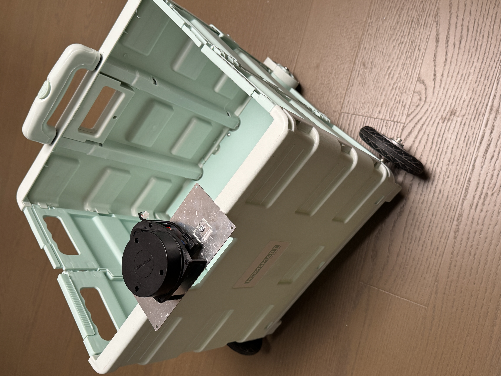
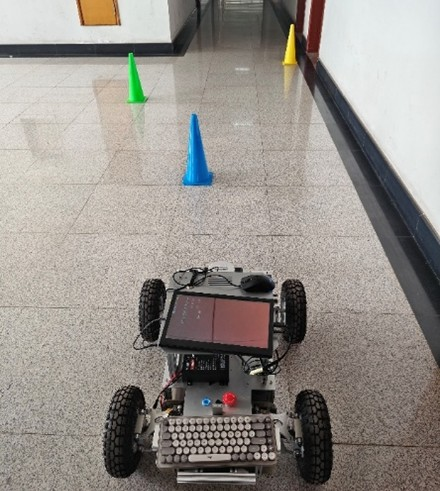
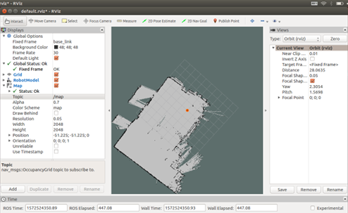
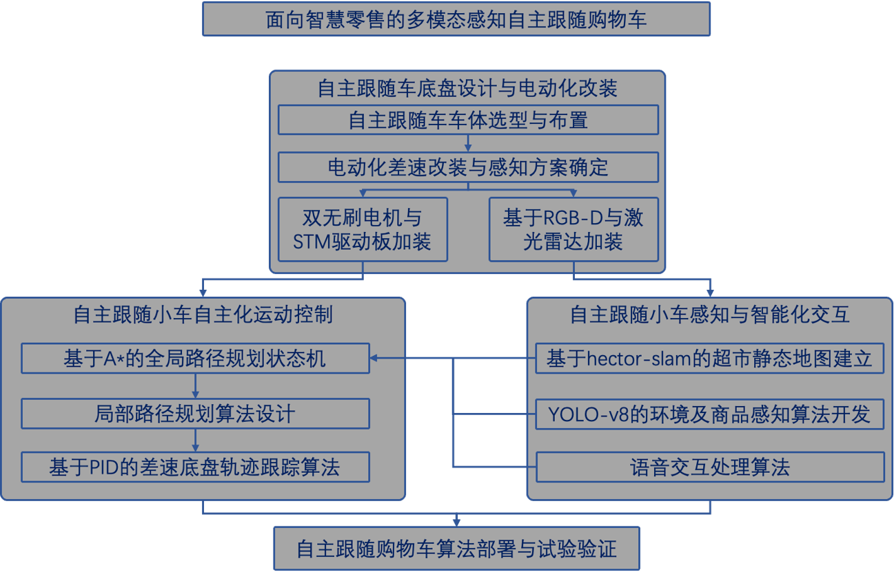

Sense
LiDAR and odometry capture the surrounding geometry and robot state.
A physical indoor mobile-robot prototype integrating LiDAR mapping, global-local path planning, obstacle avoidance, and differential-drive trajectory control for smart-retail scenarios.
The team converted a folding shopping cart into a mobile-robot prototype and evaluated indoor mapping, repeat localization, target following, path tracking, and corridor obstacle avoidance.


Project lead · Path-planning developer · System-integration coordinator
The navigation pipeline connects perception, mapping, planning, and control in a closed physical loop.
LiDAR and odometry capture the surrounding geometry and robot state.
SLAM builds a two-dimensional occupancy map and estimates robot pose.
A* generates the global route while local planning reacts to nearby obstacles.
Closed-loop control converts path error into differential wheel commands.

